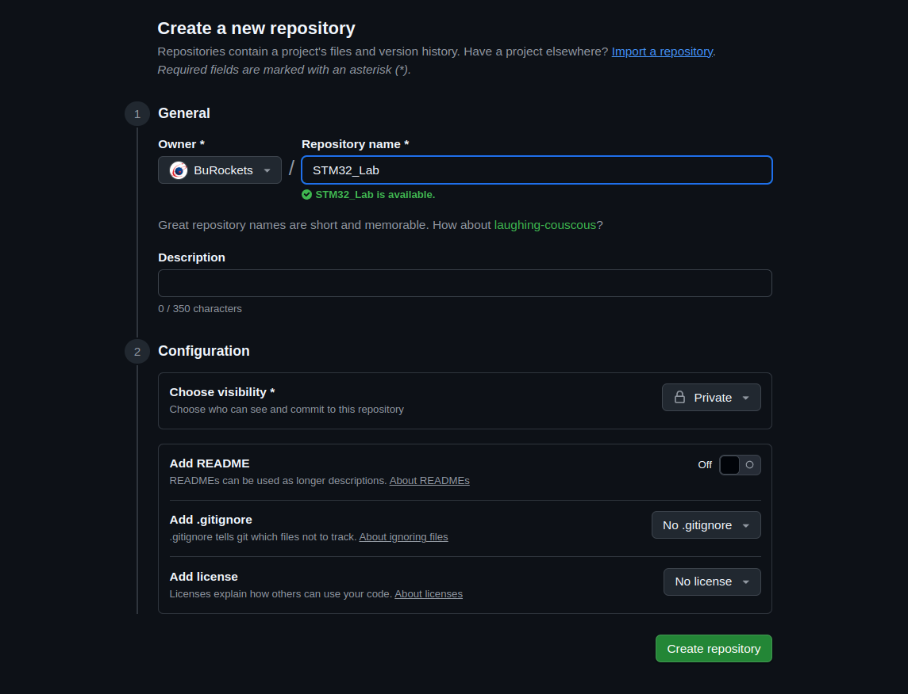

01_GIT
Установка Git
- Установить:
Начало работы с Git
Клонирование удалённого репозитория
- Генерация ключа SSH для доступа к GitHub: безопасной аутентификации и подключения к вашему аккаунту без постоянного ввода логина и пароля.
- Открыть Проводник ⇒ в строке адреса написать cmd ⇒ нажать Enter (откроется командная строка).
- В командной строке написать команду ssh-keygen (Enter, Enter, Enter, ... Всё по дефолту).
- После этого в папке вашего пользователя на ПК появится скрытая папка
.ssh, в которой находятся два файла:один с расширением.pub— публичный ключ;второй без расширения — приватный ключ.
С git можно работать как из командной строки, так и использовать сторонние приложения.
Мы рекомендуем использовать сторонние приложения-GUI в качестве просмотровщиков состояния вашего репозитория: веток, коммитов и т.д. (об этом поговорим чуть позже).
В разделе "Установка Git" некоторые пункты будут для работы именно через программу TortoiseGit — пропустите их, если хотите клонировать репозиторий и работать через командную строку.


Публичный ключ загружается на GitHub, приватный ключ должен храниться у вас локально на компьютере.
Когда вы будете клонировать (создавать локальную копию) удалённый репозиторий с GitHub, Git использует SSH-протокол для подключения к серверу GitHub.
Клиент (ваш компьютер) отправляет серверу GitHub информацию о своей публичной части ключа.
Далее GitHub сравнивает присланный публичный ключ с ключами, зарегистрированными в вашем аккаунте.
Сервер создаёт случайный вызов (challenge) и отправляет его клиенту — зашифрованный с помощью вашего публичного ключа.
Клиент с помощью приватного ключа расшифровывает вызов и посылает ответ обратно.
Если всё пройдет без ошибок, аутентификация будет успешной.
-
TortoiseGit ⇒ Открыть PuTTygen:
- load key (приватный ключ, который без расширения, созданный ssh-keygen)
- save private key, without passphrase (имя_ключа.ppk)


-
Создать аккаунт на сайте GitHub:
- придумать понятный никнейм
- загрузить аватарку
- сообщить свой никнейм преподавателю для получения доступа к курсу
- Зайти в свой аккаунт GitHub ⇒ Аватар (правый верхний угол) ⇒ Settings ⇒ SSH and GPG keys (в левом столбце) ⇒ New SSH key ⇒ вставить в поле key содержимое публичного ключа (имя_ключа.pub) (за исключением последних символов до знака =) ⇒ нажать Add key
-
TortoiseGit ⇒ Запустить Pageant:
Если вы получаете такую ошибку:

Тогда ваш Pageant уже запущен и нужно открыть его таким способом:

После запуска Pageant добавляем .ppk ключ Add Key (имя_ключа.ppk)

-
Так как мы хотим создать локальную версию уже созданного кем-то и расположенного на удалённом сервере (в нашем случае GitHub является таким сервером) репозитория, то вам необходимо либо создать свой репозиторий на GitHub где вы будете иметь полные права как на чтение, так и на запись удалённого реаозитория.Для этого заходим на GitHub, авторизуемся и создаём удалённый репозиторий:Во вкладке Repositories нажимаем на кнопку New ⇒Вводим название репозитория и нажимаем Create repositoryПосле создания репозитория скопируем URL-ссылку для его клонирования по SSH
Code ⇒ Local ⇒ скопировать URL

-
TortoiseGit ⇒ Зайти в проводник (где вы хотите разместить папку с лабораторными работами) ⇒ щёлкнуть правой кнопкой мыши ⇒ Git Clone...
 ⇒ в URL вставить скопированный с сайта URL ⇒ Enter
⇒ в URL вставить скопированный с сайта URL ⇒ Enter

- Command git ⇒ Если вы планируете работать с git через командную строку и пропускаете пункты помеченные TortoiseGit, то выполните этот пункт
- После установки git у вас появится возможность работать с командной строкой bash
Зайдите в папку, в которую хотите склонировать удалённый репозиторий, нажмите правой кнопкой мыши и выберите Git Bash

Откроется командная строка Bash, запишите команду git clone [url] для клонирования удалённого репозитория с скопированным нами ранее URL
Команда будет выглядеть вот так: git clone git@github.com:Rocket-B/STM_Labs.git
Если всё прошло успешно, то поздравляю, вы склонировали репозиторий с лабораторными работами к себе на компьютер!
Теория
- Зафиксированное (committed) состояние означает, что данные надёжно сохранены в локальной базе.
- Модифицированное (modified) состояние означает, что изменения уже внесены в файл, но пока не зафиксированы в базе данных.
- Индексированное (staged) состояние означает, что вы пометили текущую версию модифицированного файла как предназначенную для следующей фиксации.
Локальность операций
Для осуществления практически всех операций системе Git требуются только локальные файлы и ресурсы.
Git ищет старый файл и вычисляет внесённые в него правки, вместо того чтобы просить об этой операции удалённый сервер или считывать с этого сервера старую версию файла для локального сравнения.
Это также означает, что практически все операции могут проводиться в автономном режиме и без использования виртуальной частной сети.
Целостность GIT
В системе Git для всех данных перед сохранением вычисляется контрольная сумма, по которой они впоследствии ищутся.
Механизм, которым пользуется Git для вычисления контрольных сумм, называется хешем SHA-1. Это строка из 40 символов, включающая в себя числа в шестнадцатеричной системе (0–9 и a–f) и вычисляемая на основе содержимого файла или структуры папки в Git. Хеш SHA-1 выглядит примерно так:
24b9da6552252987aa493b52f8696cd6d3b00373Git сохраняет данные в базе не по именам файлов, а по хешу их содержимого.
Основные состояния в Git
В Git можно выделить три основных состояния: модифицированное, индексированное, зафиксированное.
Файлы в Git имеют состояния: отслеживаемый и неотслеживаемый. Отслеживаемые файлы могут быть изменёнными, неизменёнными или подготовленными к фиксации.
Как работать с Git:
- Для большего понимания работы Git советуем посмотреть несколько видео про git из плейлиста.
- Или целый плейлист про гит.
Контрольные вопросы по git:
- Что такое репозиторий?
- Чем отличается локальный и удалённый репозиторий?
- Что означают команды:
- git add
- git commit
- git push
- Что такое ветки и как с ними работать?
- git merge
- switch/checkout to ...
Наши преподаватели
Спасибо за проявленный интерес к ракетостроению и добро пожаловать к нам на курс.

Преподаватель 1
Исследователь, научный сотрудник
Специальзируется на теме 1

Преподаватель 2
Инженер программист
Специальзируется на теме 2

Преподаватель 3
Инженер электронщик
Специальзируется на теме 3